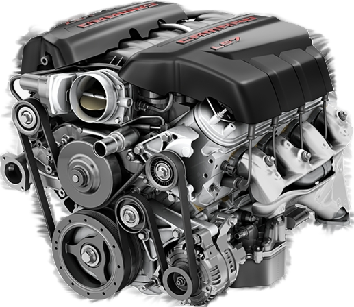

AUTOTECH
Misión: En AUTOTECH, nuestra misión es proporcionar un servicio de reparación y mantenimiento de vehículos
excepcional y confiable para nuestros clientes. Nos esforzamos por brindar una experiencia de atención al
cliente de primera clase y un servicio de alta calidad utilizando tecnología avanzada y técnicas
innovadoras.
Visión: Nuestra visión en AUTOTECH es convertirnos en el taller mecánico líder en el mercado, reconocido por
la calidad de nuestros servicios, la experiencia de nuestros técnicos y la satisfacción de nuestros
clientes. Buscamos ser un referente en el sector automotriz, ofreciendo soluciones integrales y
personalizadas para el cuidado y mantenimiento de los vehículos, brindando siempre un servicio amable y de
confianza.
Además queremos:
1-Mejorar continuamente la calidad de nuestros servicios para satisfacer las necesidades de nuestros
clientes y superar sus expectativas.
2-Ampliar nuestra gama de servicios ofrecidos para incluir reparaciones y mantenimiento de una variedad
más
amplia de vehículos, incluyendo vehículos eléctricos y de alta gama.
3-Capacitar constantemente a nuestros técnicos en las últimas tecnologías y técnicas de reparación para
garantizar que estén siempre a la vanguardia de la industria automotriz.
4-Implementar prácticas sostenibles y respetuosas con el medio ambiente en nuestras operaciones y
servicios de
reparación y mantenimiento de vehículos.
5-Expandir nuestra presencia en el mercado local a través de una estrategia de marketing efectiva,
incluyendo
publicidad en línea y presencia en las redes sociales.
6-Fortalecer nuestras relaciones con proveedores y socios comerciales para garantizar el suministro
constante
de piezas de alta calidad y una red de apoyo confiable.